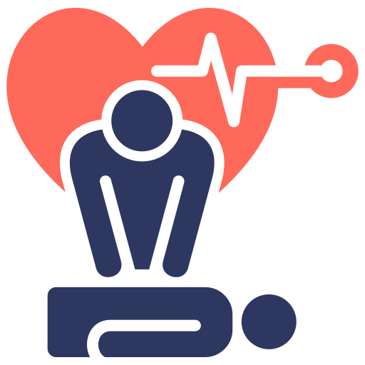
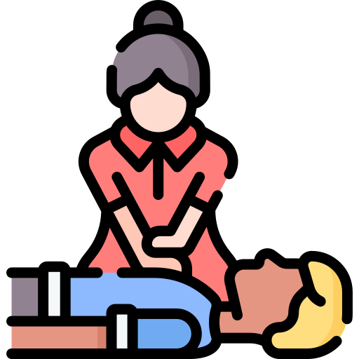

RCP – Reanimação Cardiopulmonar
Siga o passo a passo abaixo:
1. Verifique a consciência
Bata levemente nos ombros da pessoa e pergunte: “Você está bem?”.
2. Acione ajuda imediatamente
Ligue 192 ou peça para alguém ligar. Quanto mais rápido, maiores as chances de sobrevivência.
3. Abra as vias aéreas e verifique se a pessoa está respirando
Incline a cabeça para trás e levante o queixo delicadamente. Observe o peito, aproxime o ouvido e sinta a respiração por no máximo 10 segundos.

4. Inicie as compressões
Coloque as mãos no centro do peito e faça 100–120 compressões por minuto, afundando cerca de 5 cm.
5. Relação 30:2
Faça 30 compressões e 2 ventilações. Repita sem parar até a vítima voltar ou a ajuda chegar.
6. Use o DEA se houver
Siga as instruções do aparelho. Ele dirá quando aplicar o choque.